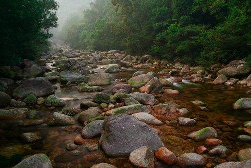

十万大山在被子植物中双子叶植物154科648属713种，单子叶植物27科179属354种。属中国大陆新记录的有4种，广西新记录的有10种。保护区有国家一级重点保护野生植物2种，即狭叶坡垒、十万大山苏铁；国家二级重点保护野生植物有金毛狗脊、粗齿桫椤等13种。十万大山保护区昆虫种类繁多，故有“南方美人松”之称。 十万大山是广西最大的八角和玉桂生产基地，产量占广西的1/3以上。为60%左右，各种知名不植物书 属于国家一级保护的野生动物 。
十万大山，东起广西壮族自治区钦州市贵台，西至中越边境，分布于钦州、防城、上思和宁明等地。山脉呈东北—西南走向，长100多公里， 宽30－40公里，总面积达2600平方公里，为广西最南的山脉。 钦州市境内，十万大山余脉在其西北部。山脉由西南防城各族自治县逶迤而来，表土层较深，海拔800米以上的山坡、山谷多长亚热带常绿阔叶林，龙须草和黄草。松树多生长在800米以下的山坡。十万大山在军事上易守难攻，便于掩蔽和转移，为险要之地。